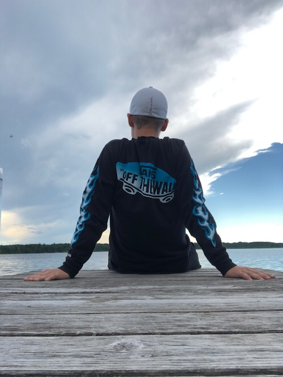

|  |
Career GoalsOne of my biggest goals that I wish to accomplish is playing golf for a college team. For about a year now, I have been taking golf more seriously and truly putting all of the effort and time I have into becoming the best player I can be. I have been taking very difficult and time consuming classes this year, but that has not stopped me from going to the range every single day. I often go to the Desert Willow Golf Club in Palm Desert, California to practice and play golf as much as possible. This particular club is the home course for the Palm Desert High School Golf Team and is the main reason I go there. With enough effort and time, I believe I My dad has played golf for over 40 years and has wanted me to play since he figured out I could hold a club. I used to play once in a while because I was more focused on other sports such as football or baseball. But I began to fall in love with the sport when I realized it was the one sport I had a real chance at being the best at. As far as a careers go, I have not put too much thought into it. Planning has always been a big part of me, but careers have never been a worry for me. Personal QualitiesOne of the characteristics that I am most grateful of possessing is my work ethic.I have a huge pet pieve of getting my work done before relaxing at all, because if I leave to later, all I think about when I am relaxing is the work I have to get done. Although it may seem annoying, I have been able to use this skill to my advantage in everything that I do and is one of the main reasons that I do well both in school and on the golf course. Golf is a sport that is 80 percent mentality based. So having this as a hobby has truly tested my mental capabilities as well as patience and perserverence through tough times. I feel that practicing golf has helped me not only become a better player, but a better person as well. One of my main accomplishments in high school is getting straight As both semesters of my freshman year. I tried to challenge myself by taking all HP classes as well as run cross country and it seems that the risk was all worth it. Running for the cross country team was way out of my comfort zone, due to me having a solid 8 minute mile time at the start of the year. But I knew that something need to be changed about my weight and my brother was currently on his fourth year of running for the Palm Desert Team, so it seemed like a no brainer. That year I dropped my mile time by almost two minutes and made so many amazing people along the way. Running Cross Country was truly one of the best decisions I ever made throughout my academic career. What I Learned Through These ExperiencesI have been fortunate enough to be given so many opportunities to prove to people who I am and what I am capable of doing. Through all of the obstacles that I have faced throughout my life, they have all taught me one thing, to strive for more. I have done many things that have benefited my academic career as a whole, including public speaking, extra curricular activities, enrichment camps, and moer and more ways that all get my name out there into the public. Everytime I do something like that, I get this fire in my body that I did something right and I have always wanted more. I have been very blessed with the cards that I have been delt throughout my life, and I am counting on using them to my best advantage.
Enjoy :)I have done as much as I can in order to put myself on a path to success, and I am glad that I got to share my story with you today. I would like to thank you for your time in exploring my life journey so far and please enjoy my website. |